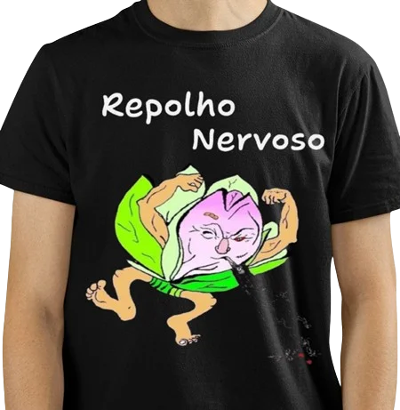
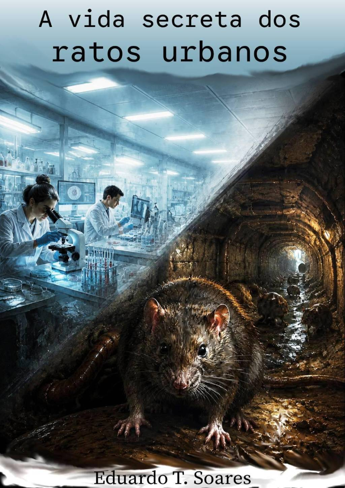
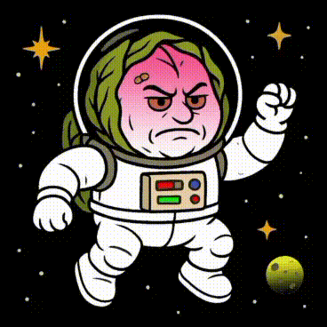
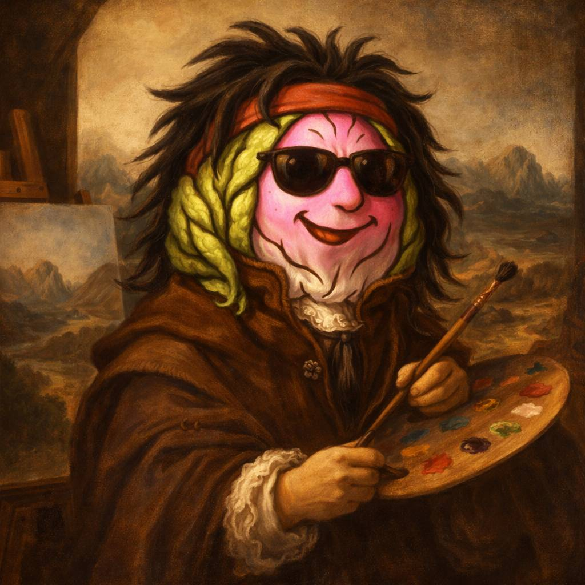

.webp)

Repolho Nervoso
foi o nome de uma banda de Hard Rock belorizontina criada por Eduardo Soares. Seu principal objetivo era levar ao público um rock alegre, descontraído e bem-humorado — sempre com a missão de espalhar um alto astral por onde passava. A formação inicial contava com as peripécias do excelente baterista André Luiz, os grooves firmes do baixista Lélo (Marco Aurélio), a guitarra sacudida e barulhenta de Eduardo Soares, e o toque harmônico dos teclados de Rodrigo Lapertosa. Juntos, esses malucos conseguiram animar o maior bando de cachaceiros do lendário Bar do Fonseca, no Bairro da Serra, em Belo Horizonte.O personagem Repolho Nervoso foi idealizado por Eduardo Soares, desenhado originalmente por Zequinha Portugal e atualizado pela talentosa Titi — ambos artistas de mão cheia.
se encontram.
A Gênesis do Repolho Nervoso

Toque nas imagens


.webp)

RepolhoBall 1
é um game divertido, desenvolvido para estimular nas crianças a coordenação motora, o senso de agrupamento e a organização. No jogo, os pais podem criar diferentes objetivos e incentivar a criança a cumprir as tarefas.
É muito legal!
é um game divertido, desenvolvido para estimular nas crianças a coordenação motora, o senso de agrupamento e a organização. No jogo, os pais podem criar diferentes objetivos e incentivar a criança a cumprir as tarefas.
É muito legal!


RepolhoBall 2
Um jogo criativo contra o tempo, onde cada bola precisa ser validada pela “Mãozinha” antes de ser colocada no seu case. O desafio é chegar ao final com o placar zerado — e só os melhores conseguem. Será que você é o próximo “Pelé do RepolhoBall 2”
Um jogo criativo contra o tempo, onde cada bola precisa ser validada pela “Mãozinha” antes de ser colocada no seu case. O desafio é chegar ao final com o placar zerado — e só os melhores conseguem. Será que você é o próximo “Pelé do RepolhoBall 2”
Click no link
repolhogames.itch.io
repolhogames.itch.io
Repolho Nervoso Fashion
.gif)



Moda — Vista arte. Vista atitude.
As camisetas da Repolho Nervoso Fashion apresentam pinturas originais do artista Eduardo Soares, reproduzidas em estampas de alta definição sobre malhas premium. Cada peça é pensada para durar, para emocionar e para vestir uma ideia.
Não vendemos tendência: promovemos identidade. Ao adquirir uma peça, você apoia diretamente o trabalho de artistas independentes.
Highlights:
Estampas em óleo sobre tela reproduzidas com impressão premium
Edições limitadas
Acabamento de qualidade e informações claras de composição
As camisetas da Repolho Nervoso Fashion apresentam pinturas originais do artista Eduardo Soares, reproduzidas em estampas de alta definição sobre malhas premium. Cada peça é pensada para durar, para emocionar e para vestir uma ideia.
Não vendemos tendência: promovemos identidade. Ao adquirir uma peça, você apoia diretamente o trabalho de artistas independentes.
Highlights:
Estampas em óleo sobre tela reproduzidas com impressão premium
Edições limitadas
Acabamento de qualidade e informações claras de composição

Repolho Nervoso Books.
Laboratório Literário
Laboratório Literário



Você acaba de ganhar um presente:
o app Repolho Nervoso!
Com ele, você monitora a bateria do seu Android com alertas de carga baixa ou cheia, tudo 100% configurável. De quebra, você ainda cria lembretes rápidos direto na tela de notificações.
Baixe agora, é grátis!
o app Repolho Nervoso!
Com ele, você monitora a bateria do seu Android com alertas de carga baixa ou cheia, tudo 100% configurável. De quebra, você ainda cria lembretes rápidos direto na tela de notificações.
Baixe agora, é grátis!
Valeu !..
Se você chegou até o fim desta página, parabéns. Aqui é o lugar onde o bom humor encontra a criatividade e dá aquele tapa na preguiça da vida. Se gostou, espalhe a alegria (e o link). Volte sempre pra ver as novas músicas, artes e invenções.
Repolho Nervoso – cultivando risadas, sons e boas ideias desde o século passado.
Se você chegou até o fim desta página, parabéns. Aqui é o lugar onde o bom humor encontra a criatividade e dá aquele tapa na preguiça da vida. Se gostou, espalhe a alegria (e o link). Volte sempre pra ver as novas músicas, artes e invenções.
Repolho Nervoso – cultivando risadas, sons e boas ideias desde o século passado.
Apoie a arte
Ao comprar Repolho Nervoso você apoia diretamente artistas independentes. Quer ser parceiro? Envie um e-mail com seu portfólio.
Ao comprar Repolho Nervoso você apoia diretamente artistas independentes. Quer ser parceiro? Envie um e-mail com seu portfólio.